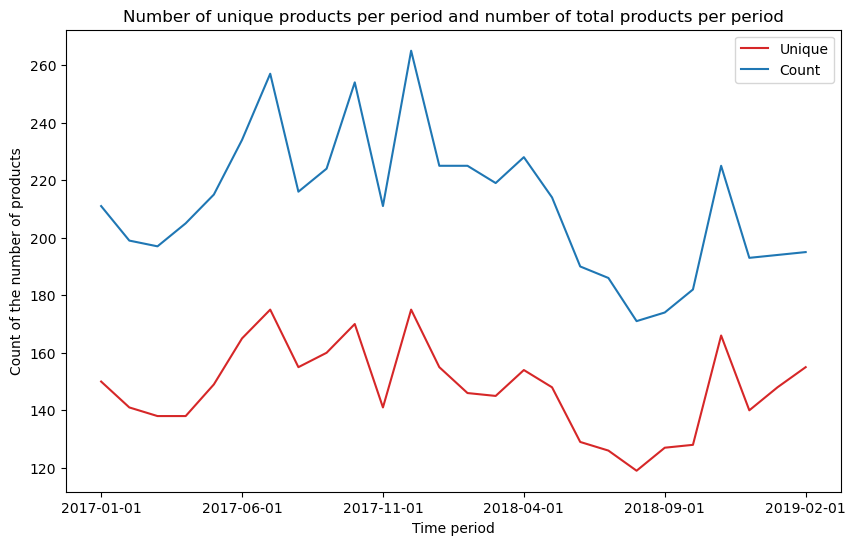
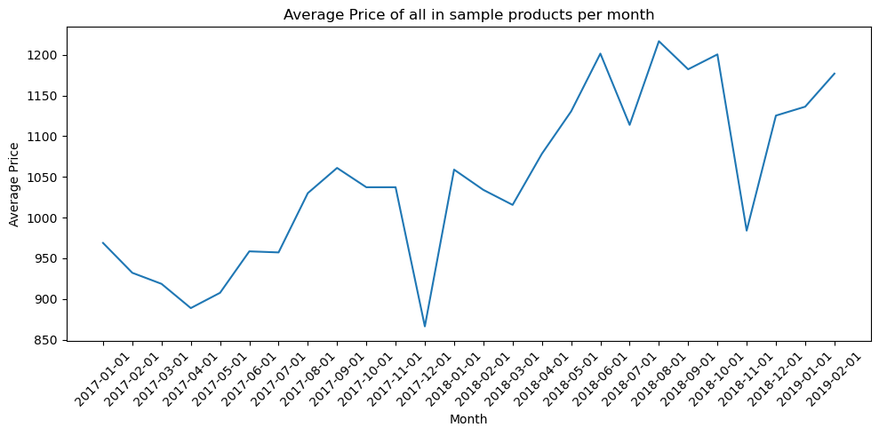

| month_num | char11 | char1 | char2 | char3 | char4 | char5 | char6 | char7 | char8 | char9 | char10 | prodid_num | quantity | value | |
|---|---|---|---|---|---|---|---|---|---|---|---|---|---|---|---|
| 0 | 2017-01-01 | brand_a | 10.6 | 16006 | val_w | val_a | val_a | PRG566 | CCC | 150D | B230 | ted | 3 | 280 | 196420 |
| 1 | 2017-02-01 | brand_a | 10.6 | 16006 | val_w | val_a | val_a | PRG566 | CCC | 150D | B230 | ted | 3 | 126 | 85312 |
| 2 | 2017-03-01 | brand_a | 10.6 | 16006 | val_w | val_a | val_a | PRG566 | CCC | 150D | B230 | ted | 3 | 148 | 95920 |
| 3 | 2017-04-01 | brand_a | 10.6 | 16006 | val_w | val_a | val_a | PRG566 | CCC | 150D | B230 | ted | 3 | 56 | 38552 |
| 4 | 2017-05-01 | brand_a | 10.6 | 16006 | val_w | val_a | val_a | PRG566 | CCC | 150D | B230 | ted | 3 | 69 | 47397 |
New Zealand scanner electronics dataset
dataset
In 2019, Frances Krsinich and Donal Lynch of StatsNZ (working with Harpal Shergill of UNSD) published a synthetic scanner dataset that could be used for various types of research topics, including on multilateral and for quality adjustment methods. The dataset is hosted on the UN Global Platform GitLab and is provided for researchers.
This short blog is a short exploration of the dataset to better understand it.
TipReproduce this blog
This blog is a jupyter article under the hood - have a look at the source. Save a copy of the data to /data/bronze/ and re-render.
Dataset structure
The data is tabular and it shows products sold per period with a large number of characteristics already pre-cleaned
<class 'pandas.core.frame.DataFrame'>
RangeIndex: 5509 entries, 0 to 5508
Data columns (total 15 columns):
# Column Non-Null Count Dtype
--- ------ -------------- -----
0 month_num 5509 non-null object
1 char11 5509 non-null object
2 char1 5509 non-null float64
3 char2 5509 non-null int64
4 char3 5509 non-null object
5 char4 5509 non-null object
6 char5 5509 non-null object
7 char6 5509 non-null object
8 char7 5509 non-null object
9 char8 5509 non-null object
10 char9 5509 non-null object
11 char10 5509 non-null object
12 prodid_num 5509 non-null int64
13 quantity 5509 non-null int64
14 value 5509 non-null int64
dtypes: float64(1), int64(4), object(10)
memory usage: 645.7+ KBThe key question is how to interpret all these feature columns and what the overall information is in the data
Show the code
stats = {}
stats['Number of unique products (prodid_num column)'] = df['prodid_num'].nunique()
stats['Number of months in sample'] = df['month_num'].nunique()
stats['First month in sample'] = df['month_num'].min()
stats['Last month in sample'] = df['month_num'].max()
stats['Char11 unique count (brands)'] = df['char11'].nunique()
stats['Char1 unique count (possibly screen size)'] = df['char1'].nunique()
stats['Char10 unique count'] = df['char10'].nunique()
pd.DataFrame.from_dict(stats, orient='index', columns=['statistic'])| statistic | |
|---|---|
| Number of unique products (prodid_num column) | 459 |
| Number of months in sample | 26 |
| First month in sample | 2017-01-01 |
| Last month in sample | 2019-02-01 |
| Char11 unique count (brands) | 10 |
| Char1 unique count (possibly screen size) | 17 |
| Char10 unique count | 5 |
Important nuances in the data
While it may not be explicit issues, there are some nuances to work through if you use it. Before using the data for price statistics, its important to consider these nuances
Every period has some duplicated products
Every period has products that seem to be duplicated - i.e. products are identical in all but sale information. We can see this by comparing the number of unique products (if we use the prodid_num column) and comparing it with just a count of the same products (without de-duplication).
Show the code
series_unique = df.groupby(['month_num'])['prodid_num'].nunique()
series_count = df.groupby(['month_num'])['prodid_num'].count()
df2 = pd.DataFrame({'Unique': series_unique, 'Count': series_count})
fig, ax = plt.subplots(figsize=(10, 6))
# Plot the first series and store the Axes object
df2['Unique'].plot(ax=ax, label='Unique', color='tab:red')
# Plot the second series on the same Axes object
df2['Count'].plot(ax=ax, label='Count', color='tab:blue')
# Add labels, a title, and a legend
ax.set_xlabel('Time period')
ax.set_ylabel('Count of the number of products')
ax.set_title('Number of unique products per period and number of total products per period')
ax.legend()
# Display the plot
plt.show()
Looking at a few examples - it is clear that all product features are identical except the quanity and the value counts
Show the code
df_first_period.groupby(['prodid_num']).filter(lambda x: x['char11'].count() > 1).head(2)| month_num | char11 | char1 | char2 | char3 | char4 | char5 | char6 | char7 | char8 | char9 | char10 | prodid_num | quantity | value | |
|---|---|---|---|---|---|---|---|---|---|---|---|---|---|---|---|
| 88 | 2017-01-01 | brand_a | 10.6 | 3718 | val_u | val_a | val_e | FBOK6552 | AAA | 100M | B230 | cuy | 12 | 46 | 16003 |
| 89 | 2017-01-01 | brand_a | 10.6 | 3718 | val_u | val_a | val_e | FBOK6552 | AAA | 100M | B230 | cuy | 12 | 22 | 8503 |
Lets look at another example
Show the code
df_first_period.groupby(['prodid_num']).filter(lambda x: x['char11'].count() > 1).iloc[2:4]| month_num | char11 | char1 | char2 | char3 | char4 | char5 | char6 | char7 | char8 | char9 | char10 | prodid_num | quantity | value | |
|---|---|---|---|---|---|---|---|---|---|---|---|---|---|---|---|
| 503 | 2017-01-01 | brand_a | 15.0 | 7814 | val_z | val_a | val_b | MG745 | AAA | 100M | B230 | cuy | 140 | 346 | 149104 |
| 504 | 2017-01-01 | brand_a | 15.0 | 7814 | val_z | val_a | val_b | MG745 | AAA | 100M | B230 | cuy | 140 | 285 | 112033 |
And another
Show the code
df_first_period.groupby(['prodid_num']).filter(lambda x: x['char11'].count() > 1).iloc[4:6]| month_num | char11 | char1 | char2 | char3 | char4 | char5 | char6 | char7 | char8 | char9 | char10 | prodid_num | quantity | value | |
|---|---|---|---|---|---|---|---|---|---|---|---|---|---|---|---|
| 540 | 2017-01-01 | brand_a | 16.6 | 16006 | val_a | val_b | val_f | PRRAPU | CCC | 100M | B230 | ted | 145 | 215 | 161386 |
| 541 | 2017-01-01 | brand_a | 16.6 | 16006 | val_a | val_b | val_f | PRRAPU | CCC | 100M | B230 | ted | 145 | 15 | 10212 |
While its unclear why this is the case – to use the data it may be useful to do a groupby and sum quantity and value columns when calculating a unit price
Product and price trends
Average prices across time
Lets first consider an average price of each category
Show the code
agg_dict = {
'char11': 'first',
'char1':'first',
'char2':'first',
'char3':'first',
'char4':'first',
'char5':'first',
'char6':'first',
'char7':'first',
'char8':'first',
'char9':'first',
'char10':'first',
'quantity':'sum',
'value':'sum'
}
df_aggregated = df.groupby(['month_num','prodid_num']).agg(agg_dict)
df_aggregated['unit_price'] = df_aggregated['value']/df_aggregated['quantity']
price_trend = df_aggregated.groupby(["month_num"])["unit_price"].mean().reset_index()
plt.figure(figsize=(10,5))
sns.lineplot(data=price_trend, x="month_num", y="unit_price")
plt.title("Average Price of all in sample products per month")
plt.xlabel("Month")
plt.xticks(rotation=45)
plt.ylabel("Average Price")
plt.tight_layout()
plt.show()